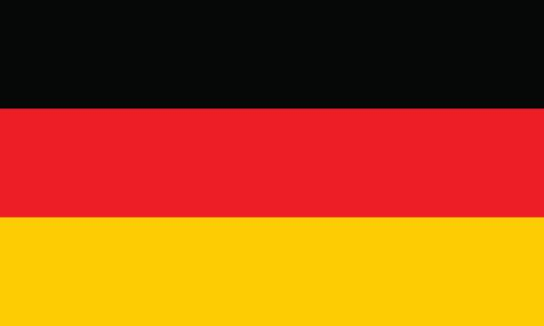
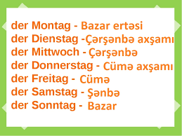
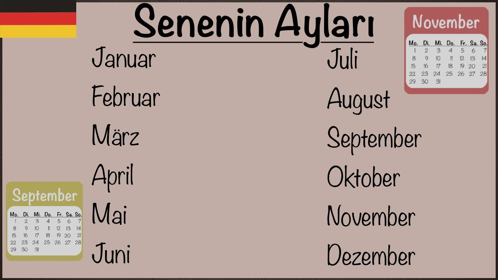
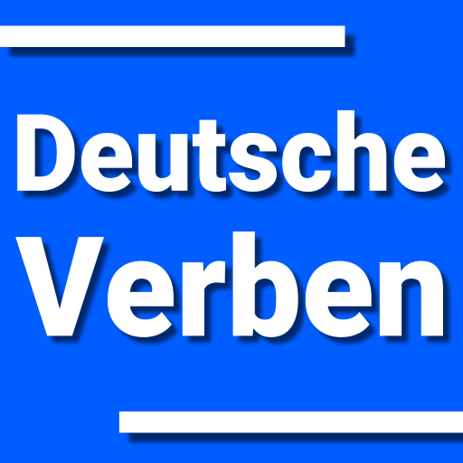
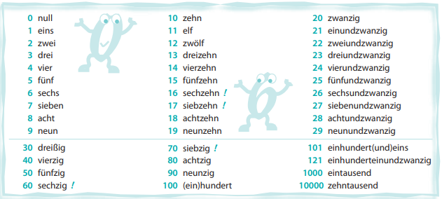
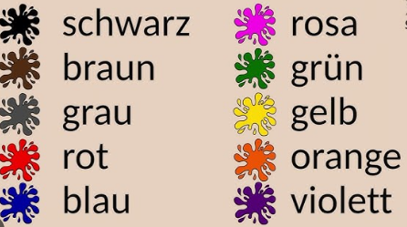

Ünsiyyətdə istifadə etdilən sözlər
Həftənin günləri
Aylar
Feillər
Rəqəmlər
Rənglər
Bədən üzvləri
Saat
Qramatika
Əvəzliklər
Şəxs əvəzliyi
Yiyəlik əvəzliyi
Qayıdış əvəzliyi
İşarə əvəzliyi
Sual əvəzliyi
Qeyri-müəyyən əvəzlik
Alman dili haqqında ümumi məlumat

Alman dili Hind-Avropa dillərinin Alman dilinə aiddir və dünyada ən çox yayılmış dillərdən biridir. Təxminən 120 milyon insanın Almanca danışdığı məlumdur. Alman Apvroada ən çox danışılan ana dilidir. Alman xaricində bir çox ölkədə danışılır. Məsələn, Almaniya, Avstriya, İsveçrə, Lixtenşteyn, Lüksemburq, Belçika, Çex Respublikası, Macarıstan, Polşa və İtaliyada rəsmi dildir. Ümumiyyətlə, insanlar Alman dilini öyrənməyi çətinləşdirirlər.
Bunun səbəbi ətrafdakılardan bu mənanı əldə etmələri və ya bu məsələyə qərəzli yanaşmalarıdır və s. ola bilər. Ancaq ümumiyyətlə, Alman dilini öyrənmək bir neçə mövzu xaricində çətin deyil. Zarafat budur ki, bu bir neçə məsələni Alman vətəndaşlarının çoxu belə bilmir. Ancaq belə bir mühitdə bu mövzuda hər hansı bir problem yaşamağımız çətin. Hər halda, bu məsələlər ətraflı müzakirə olunacaq.
Ünsiyyətdə istifadə etdiyimiz sözlər
Hallo - Salam
Wie geht es dir? - Necəsən?
Gut, danke - Yaxşı, təşəkkür edirəm
Nicht so gut - Çox yaxşı deyiləm
Nicht gut - yaxşı deyiləm
Tschüss - Sağ ol
Auf Wiedersehen - Sağ ol(üz-üzə dialoqda)
Auf Wiederhören - Sağ ol(telefonla danışarkən)
Bis bald - Tezliklə görüşərik
Bis morgen - Sabah görüşərik
Bitte - Buyurun
Wilkommen - Xoş gəldiniz
Guten Appetit - Nuş olsun
Woher kommen Sie? - Haradansan?
İch komme aus .... - Mən ....danam
Wo wohnen Sie? - Harada yaşayırsan?
İch wohne .... - Mən .... yaşayıram
Wie haißen Sie? - Adın nədir?
Ich haiße .... - Mənim Adım ....
Wie alt sind Sie? - Neçə yaşın var?
Ich bin .... Jahre alt - Mənim .... yaşım var
Ja - Bəli
Nein - Xeyr
Həftənin günləri

Welcher Tag ist Heute? - Bu gün neçənci gündür?
Welcher Tag ist es morgen? - Sabah neçənci gündür?
Welcher Tag war gestern? - Dünən neçənci gün idi?
Der Montag - Bazarertəsi
Der Dienstag - Çərşəmbə axşamı
Der Mittwoch - Çərşənbə
Der Donnerstag - Cümə axşamı
Der Freitag - Cümə
Der Samstag - Şənbə
Der Sonntag - Bazar
Heute ist montag - Bugün Bazarertəsidir
Morgen ist es dienstag - Sabah Çərşəmbə axşamıdır
Gestern war sonntag - Dünən Bazar günü idi
Aylar

Welcher Monat ist dieser Monat? -Bu ay hansı aydır?
Januar - Yanvar
Februar - Fevral
März - Mart
April - Aprel
Mai - May
Juni - İyun
Juli - İyul
August - Avqust
September - Sentyabr
Oktober - Oktyabr
November - Noyabr
Dezember - Dekabr
Das Monate ist es Januar Monat - Ay yanvar ayıdır
Der letzte Monat war Dezember - Keçən ay Dekabr ayı idi
Lazımlı feillər

Sein - Olmaq
Spielen - Oynamaq
Helfen - Kömək etmək
Drinken - İçmək
Gehen - Getmək
Kommen - Gəlmək
Können - Bilmək, Bacarmaq
Kennen - Bilmək
Fahren - Sürmək
Fliegen - Uçmaq
Lernen - Öyrənmək
Sprachen - Danışmaq
Haben - Var olmaq
Sehen - Görmək
Hören - Eşitmək
Telefonieren - Telefonla danışmaq
Schlafen - Yatmaq
Schrieben - Yazmaq
Lesen - Oxumaq
Spacieren - Gəzmək
Reservieren - Rezerf etmək
Fragen - Sual vermək
Beantworten - Cavab vermək
Surfen - Sörf etmək
Aufräumen - Təmizləmək
Arbaiten - İşləmək
Möchten - İstəmək
Wollen - İstəmək
Sitsen - Oturmaq
Kochen - Bişirmək
Essen - Yemək
Springen - Tullanmaq
Glauben - İnanmaq
Wohnen - Yaşamaq
Leben - Yaşamaq
Suchen - Axtarmaq
Finden - Tapmaq
Machen - Etmək
Stehen - Dayanmaq
Aufstehen - Ayağa qalxmaq
Schauen - İzləmək
Waschen - Yumaq
Werfen - Atmaq
Fangen - Tutmaq
Duschen - Duş almaq
Öffnen - Açmaq
Schließen - Bağlamaq
Fotografieren - Şəkil çəkdirmək
Rauchen - Siqəret çəkmək
Rəqəmlər

0-10
11-20
21-30
40,50,60,70,80,90,101,121,1000,10000
Null - Sıfır(0)
Eins - Bir(1)
Zwei - Iki(2)
Drei - Üç(3)
Vier - Dört(4)
Fünf - Beş(5)
Sechs - Altı(6)
Sieben - Yeddi()
Acht - Səkkiz(8)
Neun - Doqquz(9)
Zehn - On(10)
Elf - On bir(11)
Zwölf - On iki(12)
Dreizehn - On üç(13)
Vierzehn - On dört(14)
Fünfzehn - On beş(15)
Sechzehn - On altı(16)
Siebzehn - On yeddi(17)
Achtzehn - On səkkiz(18)
Neunzehn - On doqquz(19)
Zwanzig - Iyirmi(20)
EinundZwanzig - Iyirmi bir(21)
ZweiundZwanzig - Iyirmi iki(22)
DreiundZwanzig - İyirmi üç(23)
VierundZwanzig - Iyirmi dört(24)
FünfundZwanzig - İyirmi beş(25)
SechsundZwanzig - İyirmi altı(26)
SiebenundZwanzig - İyirmi yeddi(27)
AchtundZwanzig - İyirmi səkkiz(28)
NeunundZwanzig - İyirmi doqquz(29)
Dreißig - Otuz(30)
Vierzig - Qırx(40)
Fünfzig - Əlli(50)
Sechzig - Altmış(60)
Siebzig - Yetmiş(70)
Achtzig - Səksən(80)
Neunzig - Doxsan(90)
(Ein)Hundert - Yüz(100)
Einhundert(und)eins - Yüz bir(101)
Einhunderteinundzwanzig - Yüz iyirmi bir(121)
Eintausend - Min(1000)
Zehntausend - On min(10000)
Rənglər

Schwarz - Qara
Braun - Qəhvəyi
Grau - Boz
Rot - Qırmızı
Blau - Göy
Rosa - Çəhrayı
Grün - Yaşıl
Gelb - Sarı
Orange - Narıncı
Violett - Bənövşəyi
Bədən üzvləri
Kopf - Baş
Stirn - Alın
Haar - Saç
Ohr - Qulaq
Nase - Burun
Kinn - Buxaq
Brust - Döş
Hüfte - Omba
Oberschenkel - Bud
Knie - Diz
Unterschenkel - Alt ayaq
Fuß - Ayaq
Ferse - Daban
Augenbraue - Qaş
Auge - Göz
Mund - Ağız
Hals - Boyun
Schulter - Çiyin
Arm - Qol
Bauch - Qarın
Hand - Əl
Finger - Barmaq
Bein - Ayaq
Saat
Suallar:
Wie spät ist es? - Saat neçədir?
Wie viel uhr ist es? - Saat neçədir?
;">
Qeyd:
Zehn vor neun ona qalmış 9 dəqəiqə dedikdə yəni saat neçəyə qalırsa Məsələn: 9-a qalırsa 9 dəqiqə hələ neun vor neundeyirik.
Qeyd:
Zehn nach zwei 3-ə 10 dəqiqə işləmiş dedikdə hansı saata işləyirsə həmin saatdan 1 saat əvvəl yazırıq. Yəni saat 3-ə 10 dəqiqə işləmiş deyiriksə almanca 3 yox 2 yazacayıq.